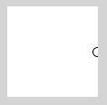
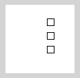

Wichtig: In Processing benutzt man Schleifen normalerweise nicht für Animation.
Du könntest z.B. auf die Idee kommen, einen Ball innerhalb von einer For-Schleife zu animieren:
// (vergeblicher) Versuch einer Animation
int x = 0;
void setup() {
frameRate(1); // 1x pro Sek. draw() aufrufen
}
void draw() {
for (int i = 0; i < 100; i++) {
background(255);
ellipse(x, 50, 10, 10);
x++;
}
// erst jetzt wird das Werk sichtbar!
}
Hier haben wir die Framerate auf 1 gesetzt, d.h. draw() wird jede Sekunde aufgerufen. Du siehst für eine Sekunde den Ball in seiner "Endposition" und dannach wird es weiß. Warum? Weil Processing erst am Ende von draw() die Zeichnung sichtbar macht. Alles, was innerhalb von draw() passiert, ist somit unsichtbar, bis die schließende geschweifte Klammer von draw() erreicht ist. Du musst bedenken, dass du dich mit dem draw() bereits in einer Art Schleife befinden. Diese draw()-Schleife regelt alles, was mit sichtbaren Veränderungen zu tun hat. Schleifen im aktiven Modus werden daher eher dazu benutzt, um mehrere Schritte innerhalb eines draw()-Aufrufs zu erledigen.
Du kannst z.B. drei Rechtecke gleichzeitig malen:
// Drei Rechtecke mit Schleife
int x = 0;
void draw() {
background(255);
// zeichne drei Rechtecke, i läuft von 1..3
for (int i = 1; i <= 3; i++) {
rect(x, i * 20, 10, 10); // jedes hat andere y-Position
}
// passe x-Wert an für Animation
x++;
}
Schau dir das unbedingt in einer Tabelle an! Nehmen wir den allerersten Durchlauf von draw(). Jetzt ist x = 0. Wie entwickelt sich i und welcher Code wird in jeder der drei Schleifendurchläufe ausgeführt?
| Durchlauf | i | i <= 3 | Ausgeführter Code |
| 1 | 1 | true | rect(0, 20, 10, 10); |
| 2 | 2 | true | rect(0, 40, 10, 10); |
| 3 | 3 | true | rect(0 ,60, 10, 10); |
| 4 | 4 | false | --- |
Die drei Befehle der rechten Spalte werden letztlich innerhalb diesen einen (ersten) Durchlaufs von draw()ausgeführt. Das heißt, jedes Mal wenn draw() aufgerufen wird, werden drei Rechtecke gezeichnet, wobei das x jedes Mal ein anderes ist - daher die scheinbare Bewegung nach rechts.
Du kannst auch ein einziges Rechteck aus 20 Linien zusammenbauen. Das machst du auch mit einer Schleife im draw(). Im jeden Schleifendurchlauf musst du die Linie genau rechts neben die vorige Linie setzen. Dazu benutzen wir die Laufvariable i und addieren sie aufs x drauf.
// fliegendes Rechteck im Eigenbau (Linien)
int x = 0;
void draw() {
background(255);
// zeichne "Rechteck" mit Linien
for (int i = 0; i < 20; i++) {
line(x + i, 40, x + i, 60);
}
// bewege Rechteck
x++;
}Da ich die Linien des Rechtecks selbst zeichne, kann ich auch einen Graustufenverlauf herstellen, indem ich mit stroke() die Graustufe jeder Linie festlege. Wieder verwende ich die Laufvariable i - diesmal für die Graustufe.
// Rechteck mit Graustufen
int x = 0;
void draw() {
background(255);
// zeichne "Rechteck" mit Linien
for (int i = 0; i < 20; i++) {
stroke(i*10); // lege Graustufe fest
line(x + i, 40, x + i, 60);
}
// bewege Rechteck
x++;
}
Im aktiven Modus hast du es mit einer Schleife in einer Schleife zu tun. Insofern verdeutliche dir bitte immer wieder, dass die For-Schleife in den obigen Beispielen innerhalb eines einzigen draw()-Aufrufs komplett durchlaufen wird.
Zusammenfassung
- Im aktiven Modus wird eine "unsichtbare" Schleife durchlaufen, die immer wieder Ihr draw() aufruft.
- Wenn du eine Schleife in draw() benutzt, hast du es im Grunde mit einer verschachtelten Schleife zu tun.
- Verwende auf keinen Fall eine Schleife in draw(), um ein Objekt zu animieren. Dies wird nicht funktionieren, weil immer am Ende von draw() gezeichnet wird und nicht während des Durchlaufs von draw().
- Ein sinnvolles Beispiel, um eine Schleife in draw() zu benutzen ist, mehrere Objekte zu zeichnen, die einen systematischen Zusammenhang aufweisen (z.B. eine Reihe von Punkten, ein Gitter von Punkten oder ein Kreis von Punkten).